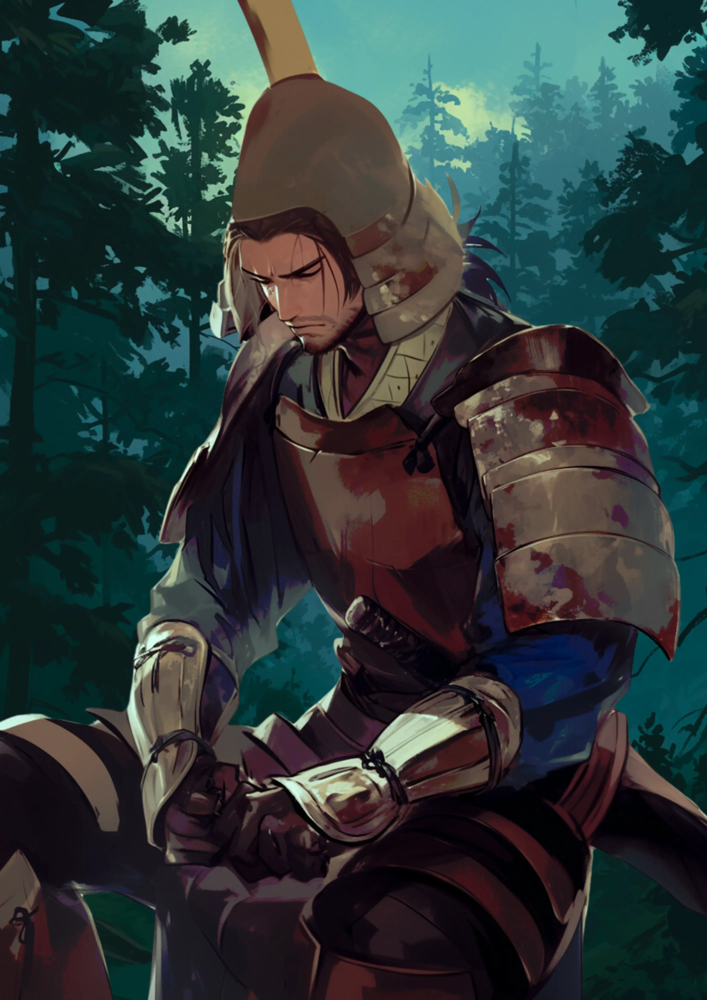
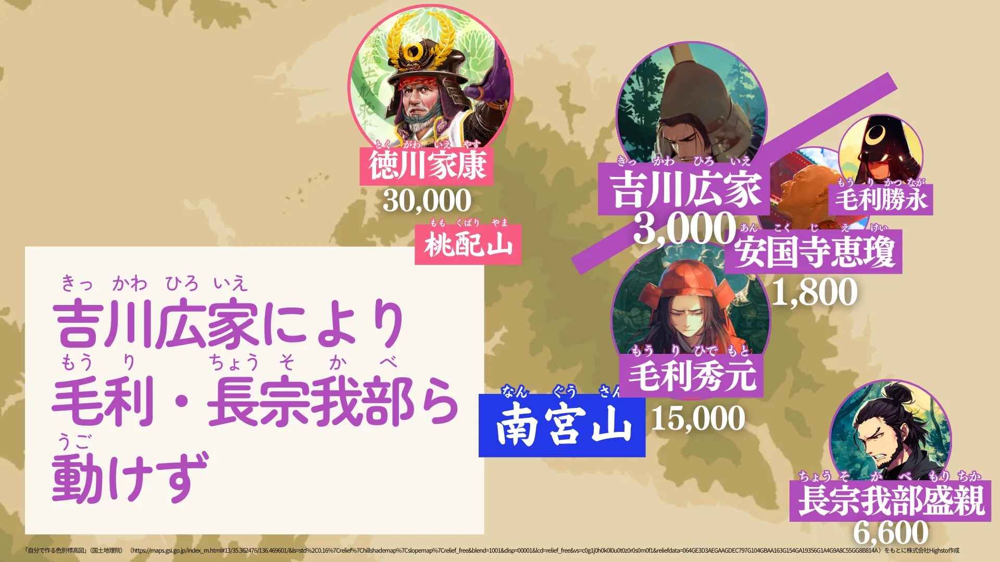

吉川広家
うつけ揺蕩う
スクナ1
南宮山の麓
スクナ1
この山、随分多くの兵がいるようだが、まさか全員を足止めしているのか？
サトリ1
自分を信じる表情
サトリ1
なるほど……、自分の家を守るために、あえて戦わないのね。
鎧紹介
南蛮形兜、三巴具足
ジェンキンス1
通常の兜のイメージとは異なる奇抜な形をしているな。

毛利を残すために、俺が出来ることは……これだッ！
人物プロフィール
生没年（開戦時/享年）
1561～1625(40/65才)
時代
戦国/江戸時代
属性
武士・西軍・長州藩
兵力
3000
石高（開戦前）
伯耆国米子城140000石
石高（戦後）
周防国岩国城30000石
どうして西軍へ？
シュン6
広家さんはどうして西軍へ？
吉川広家
俺は同世代の従兄、毛利輝元の一門衆だからだな。毛利は徳川家康の下風につくのが嫌で一族共々西軍についたのだが、どう見ても東軍有利だと思ったのでな、自ら裏切り、家名を残そうとしたのだ。
関ヶ原の戦いでは
シュン5
小早川秀秋さんと一緒で、広家さんも裏切ったんだな。誰を攻撃したんだ？
吉川広家
あー、いや、俺は攻撃した訳じゃないんだ。むしろその逆。東軍が布陣した場所の後ろにある南宮山の麓に布陣して……あえて全く動かなかったんだ。おかげで長宗我部盛親とか輝元の息子の毛利秀元は全く動けなかったのさ。

関ヶ原の戦いの後
シュン5
皆の前をふさいでたってことか！ それで、その後はどうなったんだ？
吉川広家
関ヶ原の後、俺たち毛利は西軍に加担した罪に問われて、改易になりそうになるんだが、西軍を裏切っていた俺は自分の領地を本家の輝元に全部渡すことで家名を残そうとしたんだ。家康殿に必死に頼み込んでさ。
吉川広家のデータ
- 知恵
- 3
- 忠義
- 4
- 勇気
- 4
- 武力
- 4
- 魅力
- 2
- 奇抜さ
- 5
シュン7
そういえば広家さんと話していて、信長みたいな感じがしたな……もしかしたら、うつけだったのかもなぁ。
家紋・旗印の紹介
丸に三つ引き
クイズ！：俺が陣取ったのはどこかわかるか？